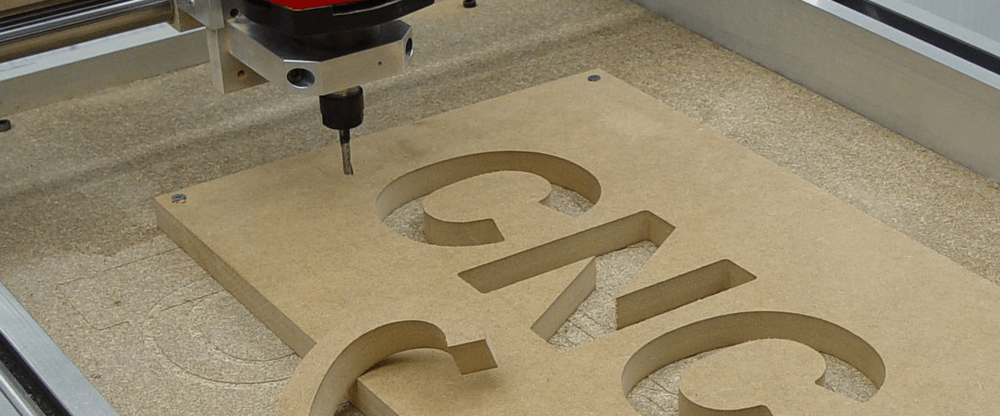
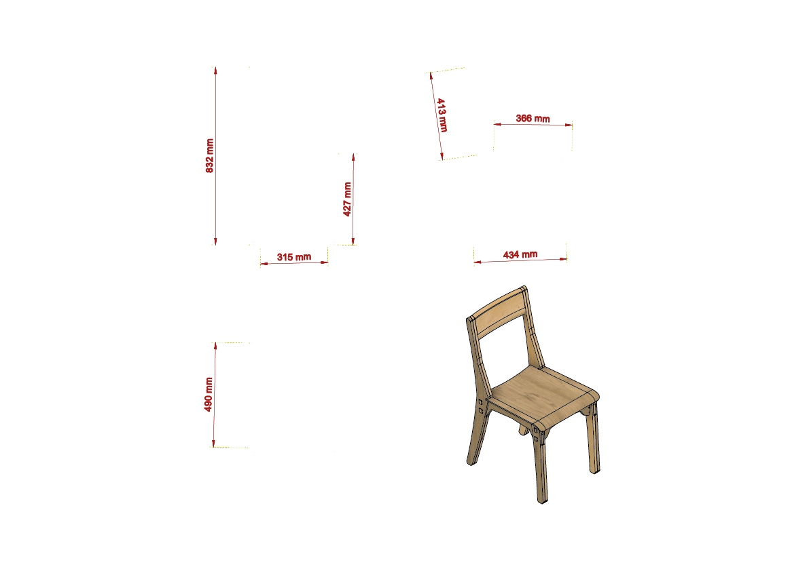
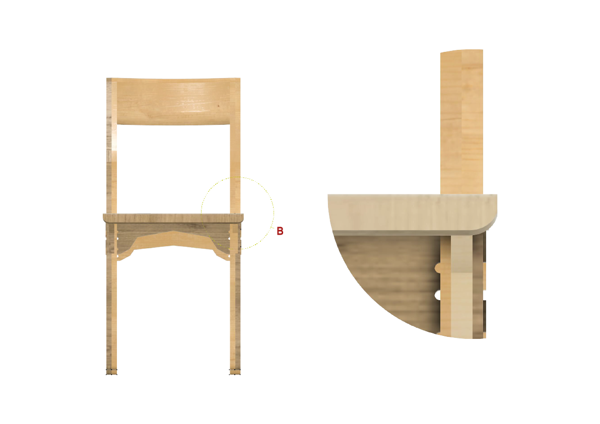
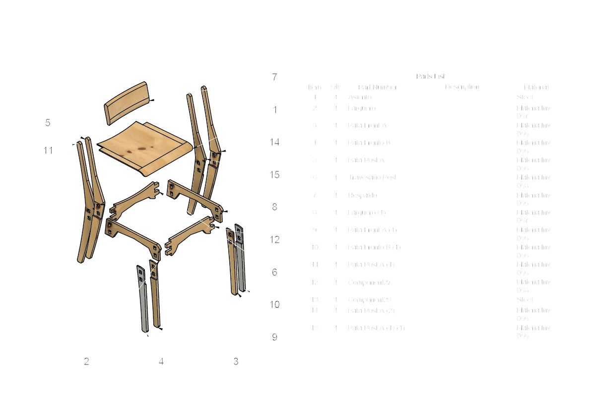

E02 - Mecanizado CNC
¿Que es una maquina CNC?
Un Router CNC (control numerico computarizado) es una máquina controlada por una computadora y su función es realizar cortes de forma automatizada. Las trayectorias de los cortes son controladas mediante un sistema denominado de control numérico, mismo que envía desde el ordenador las coordenadas del corte con una precisión milimétrica. Este es un proceso de desbaste mediante una broca que gira para cortar el material y darle forma a la pieza.
Historia del Control Numero Computariazdo.
En 1952, Richard Kegg, en colaboración con el MIT (Instituto Tecnológico de Massachusetts), colaboración la primera fresadora CNC: la Cincinnati Milacron Hydrotel. Cinco años más tarde, en 1958, solicitó una patente para un «Aparato controlado por motor para máquina herramienta de posicionamiento». Este fue el nacimiento comercial de esta tecnología.
Tipos de CNC
Actualemente existen una gran diversidad de maquinas CNC, dentro de las cuales podemos encontrar las siguientes:
- Fresadora.
- Torno.
- Rectificadora.
- Cortadora laser (waterjet o por electroerosión).
- Estampadora.
- Prensa.
- Brazo robotico.
- Impresoras 3D.
Para el ejercicio siguiente ejercicio se ocupo una maquina fresadora, la cual realiza trabajos de mecanizados por arranque de viruta, mediante el movimiento de una herramienta rotativa de varios filos de corte, denominada fresa.

Ejercicio: Silla Fresia
Elemntos:
La silla se destaca por tener una estructura reforzada y firme, la cual te garantiza estabilidad durante su uso. Posee acabados de gran calidad que le dan una apariencia natural. El respaldo te asegura el soporte adecuado para mantener una buena postura, sumado a que sus arcos le dan un aspecto más dinámico.
Iframe de Fusion 360: Silla entera y por partes
7 sencillos pasos para mecanizar en CNC nuestra silla Fresia
Primer paso:
Hacer un cuadrado de 1220x1220 mm con el comando “Sketch”
Segundo paso:
Extruir el cuadrado en 15 mm mediante el comando “Extrude”
Tercer paso:
Mover las piezas con Alinear a la plancha creada a partir de las piezas de la silla [considerar las caras, lados y ejes], esto mediante los comandos “Move copy” y luego “Align”
Cuarto paso:
Configurar la orientación (eje z hacia arriba) mediante el comando “Setup”
Quinto paso:
Generar los contornos 2D, mediante el comando “Contour”, luego elegir la fresa “flat end mill” de 9 mm, editar los mm de profundidad en “multiple depths” y crear “Tabs” para no romper el material
Sexto paso:
crear las hendiduras del modelo, nuevamente editar los mm de profundidad en “multiple depths” mediante el comando “Poket”
Septimo paso:
para el asiento generar una plancha similar a la anterior, y pasar a “manufacture” Contour y Trace: Seleccionamos el contorno y utilizamos “Trace” para marcar el camino por el que debe pasar nuestra fresa.
Piezas:
| Pieza | Cantidad |
|---|---|
| Largueros | 2 |
| Patas Traseras | 2 |
| Patas Delanteras | 2 |
| Asiento | 1 |


Videos de Simulación
Piezas en plancha terciado de 15mm
Piezas en plancha terciado 9mm.
Imagenes editadas
   


Imagenes reales